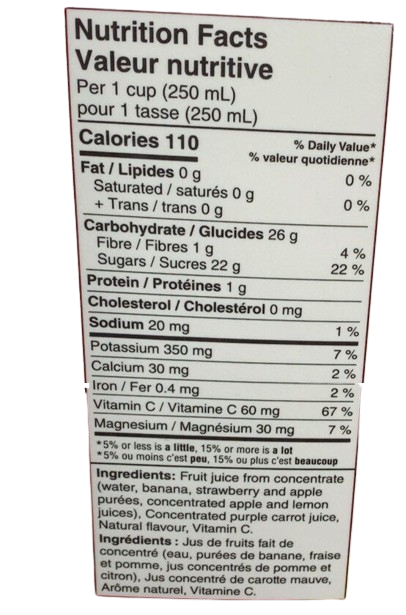
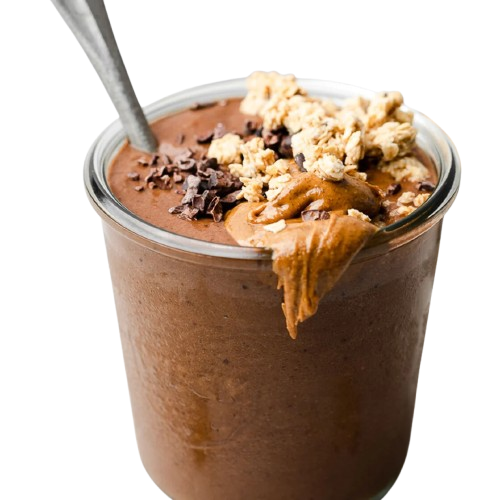

The Tropical Forest is a smoothie that originates from the South American forests, directly from the French Guyanese part of the Amazon. You can experience the new trend among the Latinos with The Tropical Forest.


With products from Switzerland, French Guyana, and Canada. The Tropical Forest is a myriad of flavours and dreams of a hot beach in July. The list of ingredients are listed below:
- 1) Strawberry - French Guyana
- 2) Banana - French Guyana
- 3) Goat milk (Blüemlisberg) - Switzerland
- 4) Ice (4 to 5 cubes) - Canada
The recipe is very easy, and can be made within 5 minutes
- 1) Get 6 strawberries and slice it into 5 small parts
- 2) Slice the banana in 4 to 6 parts
- 3) Add the fruits to the blender
- 4) Pour 2 cups of goat milk from the brand Blüemlisberg
- 5) Mix everything for 1-1:30 minute
- 6) Pour The Tropical Forest into a cup
- 7) Enjoy with moderation
A Travel through an asteroid field is a new smoothie that comes from a black hole on board of the spaceship Acoustic Guitar (very creative). It arrived today so you can fill your sweet tooth. Available now on the spaceship Acoustic Guitar.


With products from Switzerland, French Guyana, New Orléans, France and Ivory Coast. A Travel Through An Asteroid Field is a new special flavour from the Sagittarius A supermassive black hole that attracts all customers to its chocolate flavour filled with creaminess and tastiness
- 1) Goat milk (Blüemlisberg) - Switzerland
- 2) Chocolate (and chocolate chunks) - Côte d’Ivoire
- 3) Strawberry - French Guyana
- 4) Granola - New Orléans
- 5) Yogurt (vanilla) - France
The recipe is very easy and also takes around 5 minutes
- 1) Get 3 strawberries and slice into small pieces. Add them to the blender
- 2) With a spoon, get 4 spoonful of yogurt. Add it to the blender
- 3) Mix the strawberries and the yogurt until the consistence is thick
- 4) With the chocolate, slice everything and add it to the blender
- 5) Add the granola to the blender
- 6) Add two cups of goat milk
- 7) Mix everything for 2 minutes
- 8) Pour the drink into a cup
- 9) Slice a bit of chocolate into chunks and add it to the cup
- 10) Mix it with a spoon so the chocolate chunks resemble asteroids
- 11) Enjoy with moderation